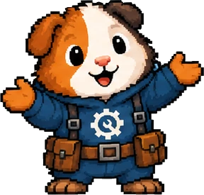

Porting a Forge 1.20.1 mod to NeoForge 1.21.1: what breaks quietly
Most of the errors in this move show up the moment you compile, and they are the easy part. The ones worth writing down compile clean, start the game without a warning, and only show up when somebody plays. These are the ones I hit.
Everything below comes from two real ports. Mindful Eating, camcam_burger's food-variety mod, which I took from Forge 1.20.1 to NeoForge 1.21.1 and handed back to its creator. And the NeoForge 1.21.1 version of Puppy Paws, a dog mod with five breeds on GeckoLib that I had already moved to Forge from its released jar.
1. The part the compiler handles for you
mods.toml becomes neoforge.mods.toml, and mandatory=true on a dependency becomes type="required". Registration moves to the NeoForge DeferredRegister helpers. The resource pack_format goes from 15 to 34. None of this is hard, and the build tells you where every piece is.
GeckoLib is the one that looks scarier than it is. Version 4.8.3 exists for both, but in 1.21.1 the core package is flattened: core.animation is now animation, core.animatable is now animatable, and CoreGeoBone becomes cache.object.GeoBone. The models, renderers and animation calls keep the same signatures. It is a long list of imports, not a rewrite.
2. Data folders were renamed, and a wrong name fails silently
1.21 moved most data folders to singular: recipes to recipe, loot_tables to loot_table, advancements to advancement, tags/items to tags/item, tags/blocks to tags/block. Biome modifiers move from forge/biome_modifier to neoforge/biome_modifier, and "forge:add_spawns" becomes "neoforge:add_spawns". In a recipe, the result changes from {"item": ...} to {"id": ...}.
Miss one and nothing complains. The game skips a folder it does not recognise, so your recipes or your spawns are simply not there. I stopped trusting my memory for these and read the path from the decompiled sources instead: Registries.elementsDirPath gives the exact folder name for any registry.
3. Food is read from the stack now
This one cost me a heal that never happened. In 1.20.1 it was normal to shrink the stack first and ask for the food values after, because the values came from the item. In 1.21 they come from the stack. Once the last piece is eaten the stack is empty, the food values come back null, and the last bite does nothing. No error, no log line.
Two related changes from the dog mod: Animal#isFood is now abstract, so a base class that never overrode it stops compiling, and FoodProperties#isMeat is gone. The replacement for "meat a dog will eat" is the tag vanilla wolves use, ItemTags.WOLF_FOOD.
4. Methods that vanished from the parent stay in your code, dead
If you rebuilt a mod from its jar, as I did with Puppy Paws, the decompiled code has almost no @Override annotations. When a method disappears from the parent class, yours keeps compiling and is simply never called. getStandingEyeHeight was removed in 1.20.5 and is the classic one. The fix is boring. Go through every override against the 1.21.1 sources, one by one.
5. Some tags you relied on no longer exist
minecraft:music_discs was how the jukebox decided what it accepted. In 1.21 that job moved to a component, and vanilla neither defines nor reads that tag any more. A copied music_discs.json just sits there. Other mods ask through the convention tag c:music_discs, which NeoForge fills with the vanilla discs.
Discs themselves left the code. RecordItem is gone; a disc is a plain item with a jukebox_playable song, and the song is a JSON file with its sound, description and length in seconds. The old seconds-versus-ticks trap of 1.20.1 goes with it. The rule I took from this is that when you port, a tag is not carried over, it is looked up again.
6. Per-player data: capabilities become data attachments
Mindful Eating kept per-player state in a capability, through a library. Its creator suggested moving it to NeoForge data attachments, which are built in, and that let the port drop the library dependency completely. Before sending the jar I checked it had no references left to the old library, because its licence does not allow bundling it. The food-stat tweaks moved to the 1.21 component system in the same pass.
7. How I check it without trusting my eyes
- Recipes, by counting. The log prints how many recipes loaded. Count vanilla's own recipe files and the difference is yours. If it is short, a folder name is wrong.
- Entity attributes, at boot. NeoForge validates them when the registry freezes and prints
has no attributesfor every entity missing them. Zero of those lines means they are all there. - GeckoLib bones, cold. Cross every bone the code asks for against the model file before launching anything. I wrote up why that crash gets past every compiler.
- Libraries at runtime too. A library declared only for compiling builds a correct jar, but the development server refuses to start without it. Declare it for runtime as well, or you cannot boot-test.
None of this replaces playing it. A dedicated server never loads a model or a texture, so a server that starts clean says nothing about the client.
If you would rather hand it off.
I port, backport and revive Minecraft mods, and Forge 1.20.1 is where I work most. I check the licence before quoting, give a fixed price in writing before any payment, and boot test every build in a real instance before it goes out.
What this costs. A version jump like this one is one of the walls I describe in what a mod port costs, and why. If the mod is on Fabric instead, start with what breaks in a Fabric to Forge port.